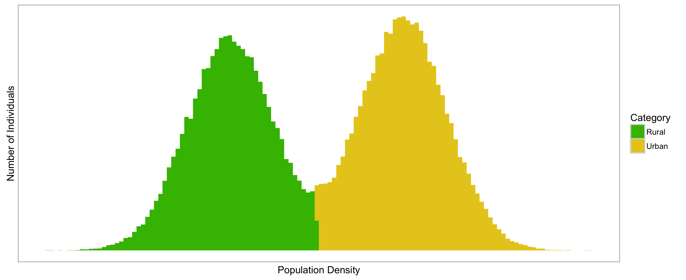
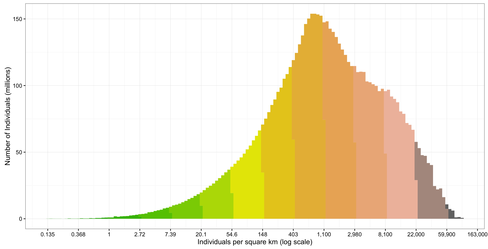
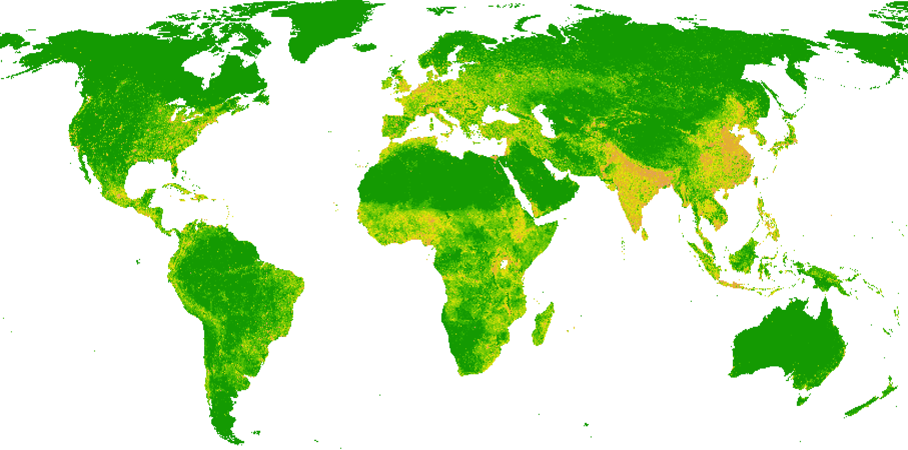
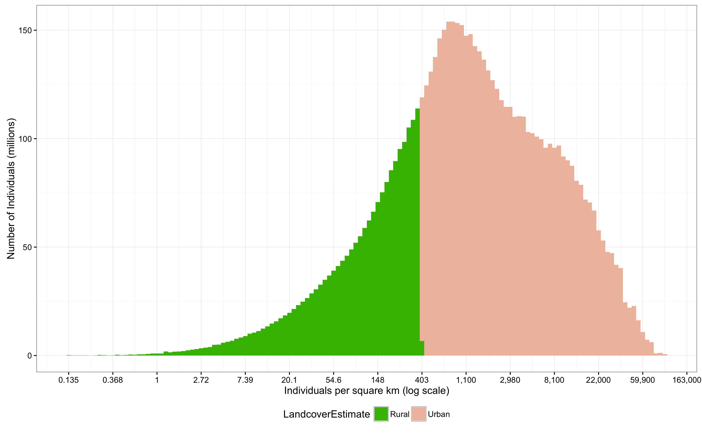
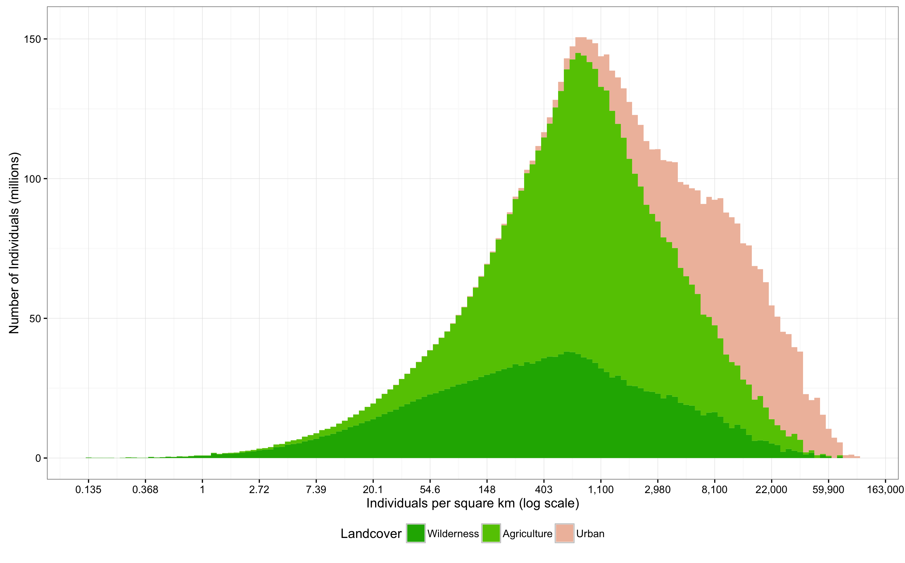
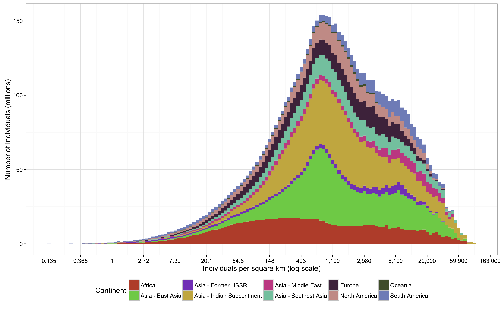
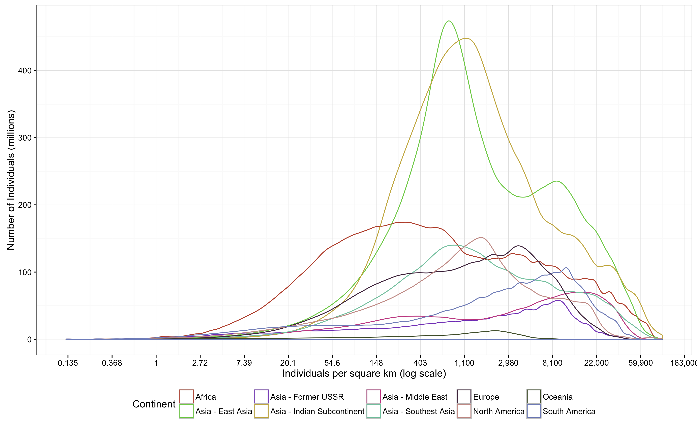

Rural/Urban Categories and Population Density
In characterizing space, the dichotomy between rural areas and urban areas is a salient one. Rural areas have low population densities, have wilderness and agricultural land cover types, and produce much of our food and raw materials. Urban areas, on the other hand, have high population densities, and are centers of manufacturing, distribution, and trade. This is a useful and interesting dichotomy, but to what extent is it an oversimplification, especially in terms of population densities?
For a long time, I held the belief that people live in either rural or urban areas - they either lived in cities, with many neighbors, or in the countryside, with few neighbors. Suburbs and moderately populated areas, I believed, were uncommon and only existed in the developed world, where our cars and mass transit allowed us to live in areas somewhat divorced from the natural spatial structure that economics would dictate. Thus, when I read that urban dwellers had surpassed rural dwellers
for the first time in human history, I imagined a very large shift had taken place.
In other words, I thought the distribution of population densities at which people live was bimodal, and looked something like this, with the first cluster being people who live in rural areas, and the second cluster being people who live in urban areas. Given that the world recently tipped from predominantly rural to predominantly urban, the two clusters should be about the same size, with the urban cluster being slightly larger, and with only a few people living in areas that are between rural and urban.

Testing the Distribution of Population Densities
I decided to test whether this was the actual distribution of population densities at which people live, using global population data from Landscan. The Landscan data product is a global grid, which each cell's number representing the number of individuals that location. I determined the area of each cell (accounting for differences in cell size by longitude), divided each cell’s population by its area, and then make the following histogram and map:


The colors correspond between the histogram and the map. Clearly, most of the land area in the world is sparsely populated. However, most of the people in the world live in areas with about 800 people per square kilometer.
This shows, surprisingly, that the distribution of population densities at which people live is decidedly unimodal. The majority of the earth's people live in places that are neither definitively urban nor rural, at least in terms of population density. It also seems that urban and rural areas are perhaps best characterized not by population density, but rather by land cover or economic function, at least at global scales.
Population Density and Land cover
To get a sense of how land cover and population density are related, I extracted land cover data at each Landscan cell using data from the Global Land Cover Facility. Again, I had a hypothesis to test. In this case, I assumed that most very dense areas would correspond to urban land cover types, while sparsely populated areas would correspond to rural and agricultural land cover types. Based on the US Census definition of “urban” and assuming everything else is “rural”, a graph of my hypothesis would look like this:

However, in reality, it seems that rural and urban land cover types are spread across population densities:

Agricultural and wilderness land cover types are found across nearly all population density types. At the far right tail, areas classified as wilderness have very high population densities, which I think should correspond to parks in large cities. Agriculture also exists in surprisingly dense settings, which should surprise no one who is familiar with large cities in the developing world. This graph also shows that, while the majority of the world's people live in areas that could be considered urban by population density, the most common land cover type in which people live is agriculture. Urban land cover types exist across a broad range of population densities as well. Areas classified as urban and built up with moderate population densities probably come from suburbs in the United States and Europe, where everything is covered in concrete but relatively few people actually live. Most people who live in urban areas have between 12,000 and 22,000 people within a kilometer – quite dense, actually!
Continents
Finally, to get a better sense of how this distribution of population densities plays out around the world, I also brought in continental data, which I graphed by stacking as well as by overlaying frequency polygons.


Here, we can see that Africa is clearly a very rural continent. Europe and the Middle East are quite urban, and so, I was surprised to discover, is South America. East Asia does have the biomodal distribution that I expected the whole world to have.
Caveats
One significantly challenge when measuring population density is the modifiable areal unit problem, or MAUP. Any time you are doing spatial statistics by aggregating point data based on polygon data, the placement of the polygons will be somewhat arbitrary, yet will affect your results. For this quick project, I used the cells of the Landscan data as my polygons, meaning I used much larger polygons at the equator (8 square km) than I did near the poles (less than 1 square kilometer). So, a 1 square kilometer city with an extremely high population density in tropics would not register as clearly as an equivalent city in polar latitudes.
Future Work and Conclusion
It would be interesting to see if (and where) the bimodal population distribution exists on more local scales. Perhaps zooming in a country would start to reveal such a distribution, as zooming in on East Asia did. I would guess that developing nations would be more likely to have this trend, because car ownership is low and most people working in agriculture or manufacturing. Countries with lots of service sector work and high rates of car ownership would have fewer areas that are definitively rural or urban.
Overall, it was fun to think about the range of human experience embodied in these graphs, from rice farmers surrounded by skyscrapers in Asia to individuals in far-flung wilderness, miles and miles from another human.

{kind=link}
{kind=link}
{kind=link}
{kind=link}
{kind=link}
{kind=link}
{kind=link}